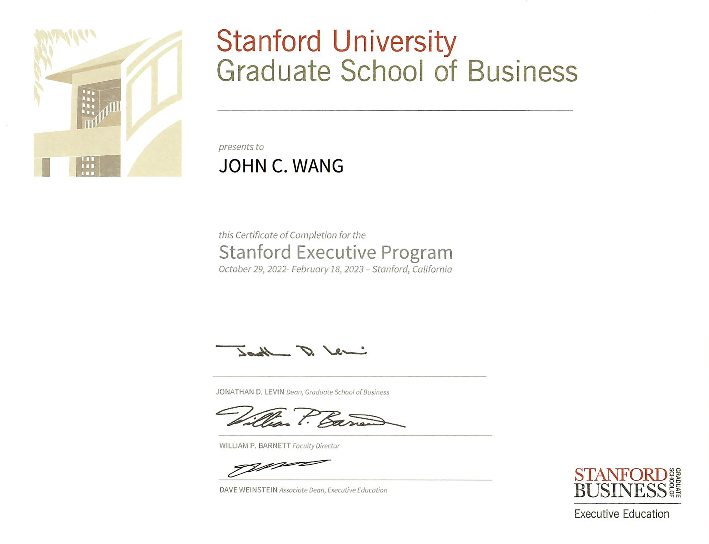

John's Leadership Certificates
Fundamentals (5)
Stanford Executive Program (SEP) from Stanford

Becoming a Great Leader - Leadership Skills from EJ4
Are There Fixed Leadership Traits? from Grovo

Why Leadership Isn't About the Leader from Grovo

What is the Difference Between Management and Leadership from Grovo

Strategy (1)
Successful Strategies for Emerging Leaders from NonprofitReady by The Jeff Havens Company

High-Performance Culture (1)
Unleashing High-Performance Culture with McLaren Racing from Udemy by Daniel Gallo, Ian James, Piers Thynne
Inspiration (2)
Recognize Leadership in Others from NonprofitReady

How Great Leaders Inspire Action from NonprofitReady by Simon Sinek

Change Management (1)
Removing Barriers to Change from University of Pennsylvania, Wharton School by Jonah Berger
Communications (1)
Using Generative AI to Refine Communications to Executives from Pluralsight by Ed Freitas